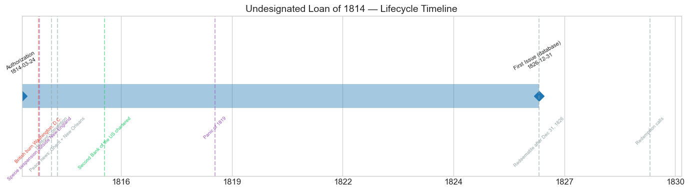
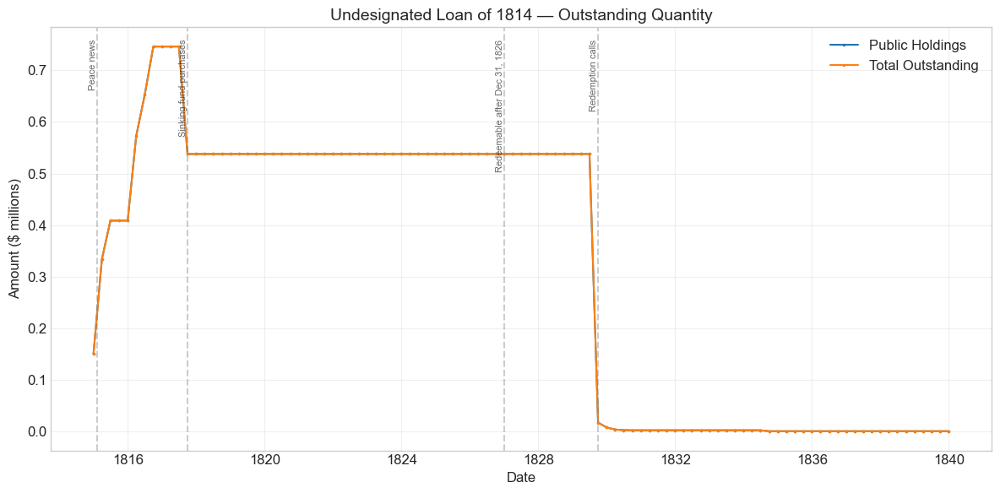
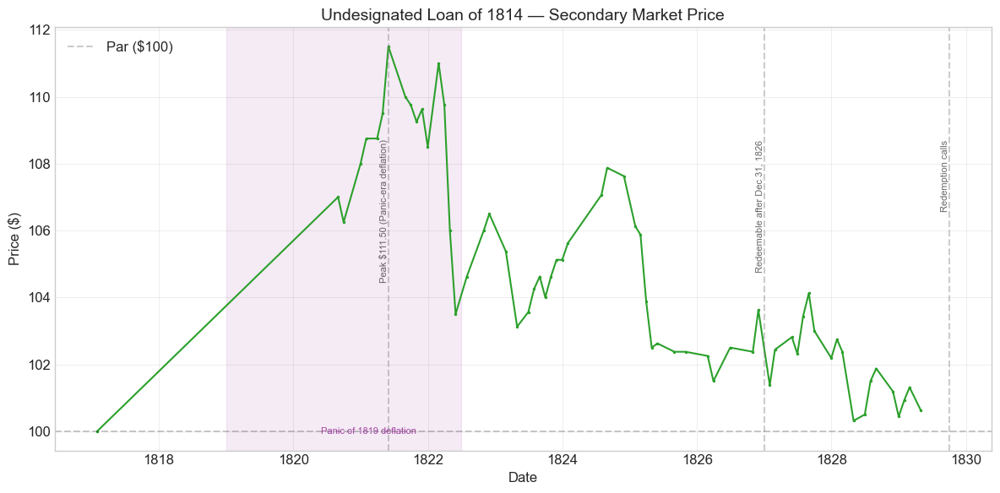
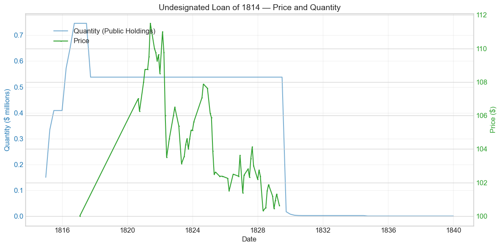
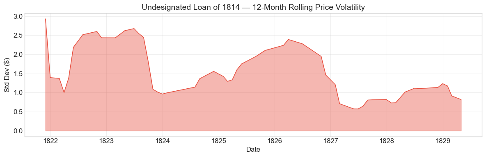

Bond Biography: Undesignated Loan of 1814#
The Residue of a Broken Credit — 1814 Six Per Cent. Stock Unassigned to the Named Loans#
An enhanced chapter from the Hall-Payne-Sargent US Federal Bond Database (2,857 issues, 1776–1960)
Bond ID (L1): 20058 | Category: Interest Bearing > Marketable > Long Term Bond
import pandas as pd
import numpy as np
import matplotlib.pyplot as plt
import matplotlib.patches as mpatches
import datetime
import warnings
warnings.filterwarnings('ignore')
plt.style.use('seaborn-v0_8-whitegrid')
plt.rcParams.update({'figure.figsize': (12, 6), 'font.size': 12,
'axes.titlesize': 14, 'axes.labelsize': 12})
# Load the bond database
store = pd.HDFStore('../data/BondDF.h5', mode='r')
BondList = store['BondList']
BondQuant = store['BondQuant']
BondPrice = store['BondPrice']
store.close()
BondQuant_T = BondQuant.transpose()
BondPrice_T = BondPrice.transpose()
bond_id = 20058
print(f'Loaded data for: Undesignated Loan of 1814 (ID: 20058)')
/Users/thomassargent/anaconda3/lib/python3.9/site-packages/pandas/core/arrays/masked.py:60: UserWarning: Pandas requires version '1.3.6' or newer of 'bottleneck' (version '1.3.5' currently installed).
from pandas.core import (
Loaded data for: Undesignated Loan of 1814 (ID: 20058)
Overview#
The Undesignated Loan of 1814 is the smallest and most enigmatic member of the family of six per cent. war stocks in this database. It was authorized under the Act of March 24, 1814 — the act that empowered the Treasury to borrow up to $25 million for the third campaign of the War of 1812 — and carries the standard terms of the 1814 borrowings: a 6.0% coupon, payable quarterly in coin, on stock redeemable at the government’s pleasure after twelve years. The database records a sale price of 87½ per $100 of stock, and its quantity series begins in December 1814 at $150,000, growing in installments to a peak of just $746,403 by September 1816. During its 64 months of recorded secondary-market quotations (January 1817 to April 1829), the stock’s average price was $104.62, ranging from $100.00 to $111.50 — it never once traded below par in the recorded series, because every recorded quotation postdates the war.
A word about the name is essential, because this record’s identity is different in kind from the loans treated in the neighboring chapters. “Undesignated” is not a name the Treasury gave a loan in 1814; it is a classification of residue. The borrowings of 1814 proceeded in overlapping offerings under the March 24 act (and a further authority of November 15, 1814), and the resulting 6% stock was credited in Treasury records to the named loans — the Ten Million Loan of the spring, the smaller offerings of the desperate autumn. But a modest amount of 1814 six per cent. stock, issued under these authorities, cannot be assigned cleanly to any one of the named loans in the surviving accounts. The Hall–Payne–Sargent database gathers that unassigned stock under this ID. Its story is therefore not the story of a single subscription on a single day; it is a small, well-documented sliver of the worst borrowing year in the history of United States federal credit, and its later life — quiet premium years, pull to par, redemption at the end of the 1820s — is the war-six pattern in miniature.
Why does the borrowing of 1814 deserve the label “worst”? By the summer of 1814 the fiscal machinery Gallatin had left behind was breaking. The loan of March 1814 was offered in tranches: the $10 million sought in May was taken at 88, but the $6 million offering of August coincided almost exactly with the British landing in Chesapeake Bay. On August 24, 1814, Washington was burned; within days, banks in Philadelphia, Baltimore, and New York suspended specie payments, and suspension spread to nearly every bank outside New England. Subscriptions to the August offering fell far short even at 80 per $100 of stock, and much of what was subscribed was paid not in coin but in depreciated local bank paper whose value differed from city to city — so much so that the Treasury was forced to keep its receipts in separate, mutually inconvertible accounts by place. When Alexander J. Dallas took over the Treasury in October 1814, his first report to Congress was a blunt accounting of an essentially empty till and a public credit that had, for practical purposes, collapsed; that autumn the Treasury was unable to meet some of its obligations punctually, and the further loan attempted under the Act of November 15, 1814 was substantially a failure. The stock collected under this ID is a residue of that program — small parcels of 6% stock issued as subscriptions, settlements, and adjustments were completed between late 1814 and 1816.
Historical Context#
The auto-generated draft of this chapter associated the bond with the Second Bank charter expiry (1836), the Panic of 1837, and the Mexican-American War. Those associations are artifacts of the metadata, not of the bond’s economic life. The database’s “First Issue Date” for this record is December 31, 1826 — which coincides exactly with the Redeemable After Date implied by the twelve-year term, and is best read as a bookkeeping convention rather than the date stock first reached the public. The quantity series itself begins in December 1814, and the bond’s active life ran from the last winter of the War of 1812 to its redemption in 1829–1830, with only a trivial residue of unpresented certificates lingering on the books until a final write-off in 1834. By the time of the Panic of 1837 or the Mexican-American War, nothing of this issue existed to be affected.
The events that actually shaped this stock are the events of 1814–1830:
Date |
Event |
Category |
|---|---|---|
1814-03-24 |
Act authorizing a loan of $25 million |
Legislation |
1814-08-24 |
British burn Washington, D.C. |
War |
1814-08/09 |
Banks outside New England suspend specie payments |
Crisis |
1814-10-06 |
Alexander J. Dallas becomes Secretary of the Treasury |
Other |
1814-11-15 |
Act authorizing a further loan (offerings largely fail) |
Legislation |
1814-12-15 |
Hartford Convention assembles |
Other |
1814-12-24 |
Treaty of Ghent signed (news reaches U.S. February 1815) |
Other |
1816-04-10 |
Second Bank of the United States chartered |
Legislation |
1819–1821 |
Panic of 1819 and deflation |
Crisis |
1826-12-31 |
Stock redeemable at the government’s pleasure |
Other |
1829–1830 |
Redemption under the debt-extinction program |
Other |
The Nadir of 1814#
The context in which this stock was born is described at length in the companion chapters on the Six Per Cent. Loan of 1812 (ID 20048), the Sixteen Million Loan of 1813 (ID 20052), and the Ten Million Loan of 1814 (ID 20056); here it need only be summarized. Customs revenue — the government’s fiscal backbone — had been strangled by the British blockade; internal taxes, enacted late, yielded slowly; the First Bank of the United States, which might have organized emergency credit, had been allowed to die in 1811; and New England’s deep pool of specie sat out the war. Each successive loan was taken on worse terms than the last: par in 1812, 88 in 1813, 88 and then 80 in 1814. After Washington burned and the banks suspended, the market for government stock in any uniform money effectively ceased to exist. Dallas told Congress in October 1814, in substance, that the Treasury’s means were exhausted and that public credit could be restored only by decisive taxation and a new national bank — the program that, enacted piecemeal in 1815–1816, eventually did restore it.
Why This Record Has No Wartime Prices#
Unlike its larger siblings, this record carries no price observations from the war years at all: its first recorded quotation is January 1817, at exactly 100. That is what one would expect of a small residual parcel of stock — too little of it existed, in too few hands, to generate regular quotations in the thin and disrupted wartime market. Readers should therefore resist the temptation to read this bond’s placid, always-at-or-above-par price series as evidence that the 1814 stock escaped the wartime collapse. It did not; identical 6% stock issued under the same acts traded in the 70s and low 80s in late 1814 and January 1815 (and those quotations, made in suspended bank paper, understate the collapse in specie terms — see the discussion in the Sixteen Million Loan chapter). This record simply begins its market life after the recovery was complete.
# Bond Lifecycle Timeline
fig, ax = plt.subplots(figsize=(14, 4))
# Key dates
dates = [('Authorization', '1814-03-24'), ('First Issue (database)', '1826-12-31')]
events = [('British burn Washington, D.C.', '1814-08-24', 'war'), ('Specie suspension outside New England', '1814-09-01', 'crisis'), ('Hartford Convention', '1814-12-15', 'other'), ('Peace news: Ghent + New Orleans', '1815-02-11', 'other'), ('Second Bank of the US chartered', '1816-04-10', 'legislation'), ('Panic of 1819', '1819-01-01', 'crisis'), ('Redeemable after Dec 31, 1826', '1826-12-31', 'other'), ('Redemption calls', '1829-09-30', 'other')]
import matplotlib.dates as mdates
from datetime import datetime
# Plot bond lifetime bar
d0 = datetime.strptime(dates[0][1], '%Y-%m-%d')
d1 = datetime.strptime(dates[-1][1], '%Y-%m-%d')
ax.barh(0, (d1 - d0).days, left=mdates.date2num(d0), height=0.3,
color='#1f77b4', alpha=0.4, label='Bond Lifetime')
# Mark key dates
for label, date_str in dates:
d = datetime.strptime(date_str, '%Y-%m-%d')
ax.plot(mdates.date2num(d), 0, 'D', color='#1f77b4', markersize=10)
ax.annotate(f'{label}\n{date_str}', (mdates.date2num(d), 0.25),
ha='center', va='bottom', fontsize=8, rotation=30)
# Mark historical events
colors = {'war': '#e74c3c', 'crisis': '#9b59b6', 'legislation': '#2ecc71', 'other': '#95a5a6', 'monetary': '#f39c12'}
for name, date_str, cat in events:
d = datetime.strptime(date_str, '%Y-%m-%d')
ax.axvline(mdates.date2num(d), color=colors.get(cat, 'gray'), alpha=0.5, linestyle='--')
ax.annotate(name, (mdates.date2num(d), -0.25), ha='center', va='top',
fontsize=7, rotation=45, color=colors.get(cat, 'gray'))
ax.set_yticks([])
ax.xaxis.set_major_formatter(mdates.DateFormatter('%Y'))
ax.set_title('Undesignated Loan of 1814 — Lifecycle Timeline')
ax.set_ylim(-1, 1)
plt.tight_layout()
plt.show()

Bond Features#
Feature |
Detail |
|---|---|
Name |
Undesignated Loan of 1814 |
Authorizing Act |
March 24, 1814 |
Authorization Date |
March 24, 1814 |
First Issue Date |
December 31, 1826 (database convention; quantity records begin December 1814) |
Term |
12 years |
Redeemable After |
December 31, 1826 |
First Redemption |
N/A (not recorded) |
Final Redemption |
N/A (not recorded) |
Coupon Rate |
6.0% |
Payment Frequency |
Quarterly (4 times/year) |
Callable |
No |
Payable in Coin |
Yes |
Authorized Amount |
N/A (residual classification; $25 million authorized under the parent act) |
Price Sold |
0.875 (i.e., $87.50 per $100 of stock) |
Two features deserve comment. First, the recorded sale price of 87½ sits between the 88 at which the Ten Million Loan of the spring of 1814 was taken and the 80 of the calamitous August offering — plausible for stock issued across several 1814 settlements, though the exact terms behind this residual parcel cannot be pinned to a single subscription. Whatever the nominal price, the effective discount on the autumn borrowings was deeper still, because subscriptions were received partly in bank paper that was itself depreciated relative to coin. Second, note the coincidence of the database’s “First Issue Date” with the Redeemable After Date of December 31, 1826: the twelve-year term ran, by convention, from the end of 1814, and the metadata records the redemption threshold rather than a market event.
# Display full bond features from database
row = BondList.loc[20058]
display_cols = [
"Treasury's Name Of Issue", 'Authorizing Act', 'Term Of Loan',
'First Issue Date', 'First Redemption Date', 'Final Redemption Date',
'Coupon Rate', 'Coupons Per Year', 'Callable', 'Coin',
'Authorized Amount', 'Price Sold'
]
print('Bond Features from Database:')
print('=' * 55)
for col in display_cols:
if col in row.index:
print(f' {col:<30} {row[col]}')
Bond Features from Database:
=======================================================
Treasury's Name Of Issue Undesignated Loan of 1814
Authorizing Act March 24, 1814
Term Of Loan 12 years
First Issue Date 1826-12-31 00:00:00
First Redemption Date NaT
Final Redemption Date NaT
Coupon Rate 6.0
Coupons Per Year 4.0
Callable 0.0
Coin 1.0
Authorized Amount nan
Price Sold 0.875
Bond Quantity Over Time#
The bond’s outstanding quantity peaked at $746,403 on September 30, 1816 — well under a million dollars, and less than one twentieth the size of the named 1814 loans. Data span from December 31, 1814 to the final write-off in 1834 (quarterly observations).
# Bond quantity over time
fig, ax = plt.subplots(figsize=(12, 6))
for stype in ['Public Holdings', 'Total Outstanding']:
try:
s = BondQuant_T.loc[(20058, stype)]
s = s[s.notna()]
if len(s) > 0:
ax.plot(s.index, s.values / 1e6, marker='.', markersize=3, linewidth=1.5, label=stype)
except KeyError:
pass
ax.set_title('Undesignated Loan of 1814 — Outstanding Quantity')
ax.set_xlabel('Date')
ax.set_ylabel('Amount ($ millions)')
ax.legend()
ax.grid(True, alpha=0.3)
events = {'1815-02-11': 'Peace news', '1817-09-30': 'Sinking fund purchases', '1826-12-31': 'Redeemable after Dec 31, 1826', '1829-09-30': 'Redemption calls'}
for date_str, label in events.items():
d = pd.Timestamp(date_str)
ax.axvline(d, color='gray', alpha=0.4, linestyle='--')
ax.text(d, ax.get_ylim()[1]*0.97, label, rotation=90, va='top', ha='right', fontsize=8, alpha=0.7)
plt.tight_layout()
plt.show()

Quantity Analysis#
The quantity series tells the whole biography in five movements.
Accretion, 1814–1816. The record opens with $150,000 on the books at the end of 1814 and climbs in steps — $334,032 by March 1815, $408,623 by June 1815, then further increments to $572,534 (March 1816), $652,534 (June 1816), and the peak of $746,403 in September 1816. Note that most of the growth comes after the peace. This is not fresh war borrowing; it is the completion of installment payments, the settlement of subscriptions received in uneven bank paper, and the funding of claims arising from the 1814 loan program — the administrative tail of a chaotic borrowing year being tidied into stock. The database assigns these parcels here precisely because the Treasury’s own records did not tie them to a named loan.
The 1817 reduction. Between June and September 1817 the outstanding amount fell from $746,403 to $537,896 — a 27.9% reduction. This coincides exactly with the well-documented operation, described in the Sixteen Million Loan chapter, in which the commissioners of the sinking fund used the buoyant postwar customs surplus to purchase large blocks of the war sixes in the summer of 1817. It is most plausible to read this drop as part of the same program of early retirement, though for a residual record like this one the attribution rests on timing rather than on a line in Bayley’s tables.
The long plateau, 1817–1829. For twelve years the outstanding amount then sits unchanged at $537,896 — the classic profile of a small, seasoned stock held in settled portfolios, collecting its quarterly 6% in coin while the Treasury’s redemption priorities lay elsewhere (the larger loans of 1812–1815 were retired first as their redemption dates arrived in 1825–1828).
Redemption, 1829–1830. The stock had been redeemable since the end of 1826, and once the greater war loans were cleared away the Treasury reached this one: outstanding stock collapsed from $537,896 to $16,676 in the quarter ending September 1829 (−96.9%), then to $7,214 (December 1829), $3,293 (March 1830), $2,111 (June 1830), and $1,761 by September 1830. This staircase of ever-smaller residuals is the signature of holders coming forward with their certificates for payment.
The write-off, 1834. A residue of $1,760.91 — unpresented certificates whose owners had not claimed payment — lingered on the books until it was written off in September 1834, as the entire national debt was extinguished. As with the other war loans, this final step is bookkeeping, not economics: the bond had ceased to exist as a market instrument years earlier.
Secondary Market Prices#
Overall Statistics (1817-01-31 to 1829-04-30): Mean $104.62, Range $100.00–$111.50, Std Dev $3.05, 64 observations.
By Period:
Period |
Mean |
Std |
Min |
Max |
Obs |
|---|---|---|---|---|---|
Before redeemable date (1817-01 to 1826-12) |
$105.78 |
$2.85 |
$100.00 |
$111.50 |
45 |
Redeemable to last quote (1826-12 to 1829-04) |
$101.87 |
$1.09 |
$100.31 |
$104.12 |
19 |
Three caveats govern the reading of this series. First, it is sparse and postwar only: a single quotation of exactly $100.00 in January 1817 is followed by a gap of more than three years before continuous quotations resume in August 1820. A parcel of stock this small traded by appointment, not by the day, and months without a recorded price mean thin markets rather than stable ones. Second, the apparent “+7% jump” between the 1817 and 1820 observations is a gap artifact, not a one-month move. Third, because the whole series postdates the resumption of specie payments (completed with the Second Bank’s operations from 1817), these quotations are in money of full value — unlike the wartime quotations of the sibling loans, they need no suspension discount to interpret. What the series then shows is textbook: a comfortable premium of $106–$111 during the deflationary Panic-of-1819 years, when a 6% coin coupon was worth more in real terms than ever, a peak of $111.50 in May 1821, and a long glide back toward par as the December 1826 redeemable date and then actual redemption approached — the pull to par ending at $100.63 in April 1829, months before the stock was called in.
# Annotated price chart
fig, ax = plt.subplots(figsize=(12, 6))
s = BondPrice_T.loc[(20058, 'Average')]
s = pd.to_numeric(s, errors='coerce').dropna()
if len(s) > 0:
ax.plot(s.index, s.values, marker='.', markersize=3, linewidth=1.5, color='#2ca02c')
ax.axhline(100, color='black', alpha=0.2, linestyle='--', label='Par ($100)')
ax.set_title('Undesignated Loan of 1814 — Secondary Market Price')
ax.set_xlabel('Date')
ax.set_ylabel('Price ($)')
ax.legend()
ax.grid(True, alpha=0.3)
events = {'1821-05-31': 'Peak $111.50 (Panic-era deflation)', '1826-12-31': 'Redeemable after Dec 31, 1826', '1829-09-30': 'Redemption calls'}
for date_str, label in events.items():
d = pd.Timestamp(date_str)
ax.axvline(d, color='gray', alpha=0.4, linestyle='--')
ax.text(d, ax.get_ylim()[1]*0.97, label, rotation=90, va='top', ha='right', fontsize=8, alpha=0.7)
# Shade Panic of 1819 deflation period
ax.axvspan(pd.Timestamp('1819-01-01'), pd.Timestamp('1822-06-30'), alpha=0.08, color='purple')
ax.text(pd.Timestamp('1820-06-01'), ax.get_ylim()[0] + 0.5, 'Panic of 1819 deflation', fontsize=8, color='purple', alpha=0.7)
plt.tight_layout()
plt.show()

# Price and Quantity — dual-axis chart
fig, ax1 = plt.subplots(figsize=(12, 6))
# Quantity (left axis)
for stype in ['Public Holdings', 'Total Outstanding']:
try:
q = BondQuant_T.loc[(20058, stype)]
q = q[q.notna()]
if len(q) > 0:
ax1.plot(q.index, q.values / 1e6, color='#1f77b4', alpha=0.6, label=f'Quantity ({stype})')
break
except KeyError:
pass
ax1.set_xlabel('Date')
ax1.set_ylabel('Quantity ($ millions)', color='#1f77b4')
ax1.tick_params(axis='y', labelcolor='#1f77b4')
# Price (right axis)
ax2 = ax1.twinx()
p = BondPrice_T.loc[(20058, 'Average')]
p = pd.to_numeric(p, errors='coerce').dropna()
if len(p) > 0:
ax2.plot(p.index, p.values, color='#2ca02c', marker='.', markersize=2, label='Price')
ax2.set_ylabel('Price ($)', color='#2ca02c')
ax2.tick_params(axis='y', labelcolor='#2ca02c')
ax1.set_title('Undesignated Loan of 1814 — Price and Quantity')
ax1.grid(True, alpha=0.3)
fig.legend(loc='upper left', bbox_to_anchor=(0.1, 0.9))
plt.tight_layout()
plt.show()

Detected Price/Quantity Events#
The following significant movements were auto-detected:
Date |
Type |
Change |
Nearest Historical Event |
|---|---|---|---|
1815-03 |
quantity_increase |
+122.7% |
War of 1812 |
1815-06 |
quantity_increase |
+22.3% |
War of 1812 |
1816-03 |
quantity_increase |
+40.1% |
Second Bank of the US chartered |
1817-09 |
quantity_decrease |
-27.9% |
None identified |
1820-08 |
price_spike |
+7.0% |
None identified |
1829-09 |
quantity_decrease |
-96.9% |
None identified |
1829-12 |
quantity_decrease |
-56.7% |
None identified |
1830-03 |
quantity_decrease |
-54.4% |
None identified |
1830-06 |
quantity_decrease |
-35.9% |
None identified |
1834-09 |
quantity_decrease |
-100.0% |
None identified |
Causal Explanations#
Quantity increases, 1815–1816 (+122.7%, +22.3%, +40.1%). These are administrative, not market, events: the stock being credited to this record as subscription installments, settlements in mixed bank paper, and adjustments from the 1814 loan program were completed and funded into 6% stock. The March 1816 increment predates the Second Bank’s charter (April 10, 1816) and should not be attributed to it; the proximity is coincidental. The honest summary is that the Treasury spent 1815–1816 turning the wreckage of the 1814 borrowings into clean, transferable stock, and these steps are that process as recorded on the books.
Quantity decrease, September 1817 (−27.9%). Almost certainly the sinking fund at work. In the same months the commissioners bought $2.58 million of the Sixteen Million Loan at par (Bayley 1881) and comparable blocks of the other war sixes, financed by the postwar customs surplus. The timing here matches exactly; a direct documentary line for this small residual parcel is lacking, so the attribution is by inference.
Price spike, August 1820 (+7.0%). An artifact of the series, not a market event: the previous observation is January 1817. Over the intervening three and a half years the whole family of war sixes climbed from about par to a solid premium; this record simply has no quotations in between, so the entire climb registers as a single “jump” when quotations resume.
Quantity decreases, September 1829 – June 1830 (−96.9%, −56.7%, −54.4%, −35.9%). Redemption. The stock had been redeemable since December 31, 1826, and under the Jackson-era program of debt extinction the Treasury called in the remaining war stocks as fast as revenue allowed. The large September 1829 drop is the call itself; the smaller subsequent percentages are ever-diminishing residuals of certificates presented late — large relative drops on a base already reduced to a few thousand dollars. Prices in 1828–1829 sat at $100–$102, exactly what a 6% stock facing imminent par redemption should command.
Quantity decrease, September 1834 (−100%). The final write-off of $1,760.91 in unpresented certificates as the national debt was extinguished — bookkeeping, with no market counterpart. No price had been recorded since April 1829.
Price Volatility#
Maximum drawdown: −10.0% (from the peak of $111.50 on May 31, 1821 to $100.31 on April 30, 1828)
Average monthly return: 0.020%
The chart below shows the 12-month rolling standard deviation of prices. Two things distinguish this series from its wartime siblings. First, because no wartime quotations exist for this record, the violent 1814–1815 volatility episode that dominates the charts of the 1812 and 1813 loans is simply absent here; the recorded life of this stock is entirely the placid postwar regime. Second, the measured “drawdown” of −10.0% is not a loss of confidence but the arithmetic of pull to par: a premium built by Panic-era deflation was gradually surrendered as the redemption date approached, while every quarterly coupon was paid in full. An investor who held from the 1821 peak to redemption collected 6% in coin throughout and was repaid at 100 — the drawdown is what convergence to face value looks like, not what distress looks like.
# Rolling volatility (12-month window)
p = BondPrice_T.loc[(20058, 'Average')]
p = pd.to_numeric(p, errors='coerce').dropna()
if len(p) >= 12:
rolling_std = p.rolling(window=12).std().dropna()
fig, ax = plt.subplots(figsize=(12, 4))
ax.fill_between(rolling_std.index, rolling_std.values, alpha=0.4, color='#e74c3c')
ax.plot(rolling_std.index, rolling_std.values, color='#e74c3c', linewidth=1)
ax.set_title('Undesignated Loan of 1814 — 12-Month Rolling Price Volatility')
ax.set_xlabel('Date')
ax.set_ylabel('Std Dev ($)')
ax.grid(True, alpha=0.3)
plt.tight_layout()
plt.show()
else:
print('Insufficient data for rolling volatility (need >= 12 observations)')

Issuance, Distribution, and Redemption#
The database records this stock as sold at 87½ per $100 of face value — a 12½% discount that places it squarely within the terms of the 1814 borrowing program, between the 88 of the spring offering and the 80 of the autumn. Because this record is a residual classification, the mechanics of its sale cannot be reconstructed subscription by subscription; what can be said with confidence is how the 1814 loans as a class were sold, and it is a grim story.
Who bought. By 1814 the great syndicate operation of 1813 (Girard, Astor, Parish — see the Sixteen Million Loan chapter) was not repeated on the same scale. The 1814 offerings were taken piecemeal: by banks in the middle states, by brokers and merchants in Philadelphia, New York, and Baltimore buying at deep discounts, and by contractors and creditors of the government accepting stock in settlement. New England capital remained almost entirely absent. Several substantial subscribers to the spring loan were ruined or defaulted on their later installments as the year deteriorated, which is one reason the Treasury’s accounts of the 1814 loans became tangled enough to leave a residue like this record.
What they paid with. After the suspension of specie payments in late August and September 1814, subscriptions were received in the local paper of banks that no longer redeemed their notes in coin — Philadelphia paper, Baltimore paper, New York paper, each depreciated by a different amount and none accepted at par outside its own city. A dollar received in Baltimore was not worth a dollar received in Boston, and the Treasury, obliged to keep its funds where they were paid in, found itself unable to move money to where its obligations fell due. This is the mechanism behind the Treasury’s autumn 1814 embarrassments, when some interest obligations could not be met punctually in the usual form — the closest the United States has come to an acknowledged default on its funded debt. Dallas’s reports of late 1814 and 1815 treat the restoration of a uniform national currency as inseparable from the restoration of public credit, and the Second Bank of 1816 was the institutional answer.
How it ended. Redemption followed the standard war-six sequence, delayed to the back of the queue by this stock’s later redeemable date (December 31, 1826) and its small size: sinking-fund purchases in 1817, a twelve-year premium plateau, and calls in 1829–1830 under the program that extinguished the entire national debt by 1835. Holders of the 1822–1826 exchange stocks show that some maturing war debt was refinanced into lower coupons, but for this small parcel the records indicate straightforward redemption for cash, with $1,760.91 of unpresented certificates written off in 1834.
Implications and Legacy#
A Ledger Entry as a Historical Document#
The Undesignated Loan of 1814 matters less for what it financed — at three quarters of a million dollars it paid for perhaps a few days of the war — than for what its existence records. Well-run borrowing programs do not leave residues. The fact that the Treasury’s own accounts could not assign every parcel of 1814 six per cent. stock to a named loan is itself evidence of the condition of federal finance in that year: overlapping emergency offerings, subscriptions paid in a patchwork of depreciated and mutually inconvertible bank papers, defaulting subscribers, and a department passing between three Secretaries (Gallatin, Campbell, Dallas) in a single span of crisis. The database’s honest label — “undesignated” — is the archival scar of the moment when the United States nearly could not borrow at all.
The Bottom of the Credit Ladder#
Read alongside its siblings, this stock completes the price ladder of the war: par in 1812, 88 in 1813, 88 and then 80 (with 87½ recorded here) in 1814 — each step down transferring more of the war’s cost to future taxpayers as the price of fiscal unpreparedness. The lesson contemporaries drew is written into the legislation of 1815–1816: permanent internal taxes, a funded consolidation of the floating debt, and the Second Bank of the United States, whose capital was deliberately made subscribable largely in war stock and Treasury notes — a provision that supported the market for precisely the securities in this family.
Redemption as Vindication#
And yet the ending is the same quiet vindication seen across the whole war-six family. Every quarterly coupon in the recorded life of this stock was paid in coin; the Panic of 1819 made its holders richer, not poorer, as deflation carried the price to $111.50; and the principal was repaid at par in 1829–1830 by a government running surpluses large enough to extinguish the entire national debt within five years. A security born at the absolute bottom of American public credit — sold at a deep discount, for depreciated paper, by a Treasury that could not meet all its engagements — ended as a routine par-priced instrument that the market could barely be bothered to quote. In the arc from 87½ to 111½ to redemption at 100 lies the whole story of the early republic’s credit: broken by war and fiscal orthodoxy, rebuilt by taxation, banking, and punctual payment.
A Caveat, Honestly Stated#
Because this record is a residual classification, its biography must remain more hedged than those of the named loans. The 87½ sale price, the exact composition of the parcels credited here, and the identity of the original subscribers cannot be verified issue by issue; the sinking-fund attribution for the 1817 reduction rests on timing; and the wartime experience of this stock must be inferred from the identical stock of the named 1814 loans rather than from its own (nonexistent) wartime quotations. Where this chapter asserts, it asserts from the database and from the well-documented history of the 1814 borrowing program as a whole; where those sources fall silent, it says so.
References#
Primary and Archival Sources#
Bayley, R. A. (1881). The National Loans of the United States, From July 4, 1776 to June 30, 1880. Washington: Government Printing Office.
Elliott, J. (1845). The Funding System of the United States and of Great Britain. Washington: Blair and Rives.
Act of March 24, 1814 (authorizing a loan of $25,000,000); Act of November 15, 1814 (authorizing a further loan); Act of April 10, 1816 (chartering the Second Bank of the United States).
Dallas, A. J., Report of the Secretary of the Treasury to the House Committee of Ways and Means, October 1814, and subsequent Treasury reports of 1814–1815, in American State Papers: Finance, Vol. II.
Secondary Sources#
Payne, J., Szoke, A., Hall, G. & Sargent, T. (2025). Quarterly Journal of Economics.
Adams, H. (1889–1891). History of the United States of America during the Administrations of James Madison (war finance chapters). New York: Charles Scribner’s Sons.
Dewey, D. R. (1918). Financial History of the United States. New York: Longmans, Green and Co.
Studenski, P. & Krooss, H. E. (1952). Financial History of the United States. New York: McGraw-Hill.
Perkins, E. J. (1994). American Public Finance and Financial Services, 1700-1815. Columbus: Ohio State University Press.
Hickey, D. R. (1989). The War of 1812: A Forgotten Conflict. Urbana: University of Illinois Press.
Kagin, D. H. (1984). “Monetary Aspects of the Treasury Notes of the War of 1812.” The Journal of Economic History, 44(1).
Hall, G. J. & Sargent, T. J. (2014). “Fiscal Discriminations in Three Wars.” Journal of Monetary Economics, 61, 148-166.
Enhanced Bond Biography generated from the Hall-Payne-Sargent Bond Database. Narrative enrichment draws on Bayley (1881), Adams (1889-1891), Dewey (1918), Studenski & Krooss (1952), Perkins (1994), and Hickey (1989). Companion chapters: the Six Per Cent. Loan of 1812 (ID 20048), the Sixteen Million Loan of 1813 (ID 20052), the Ten Million Loan of 1814 (ID 20056), and the Louisiana Six Per Cent. Stock (ID 20044).